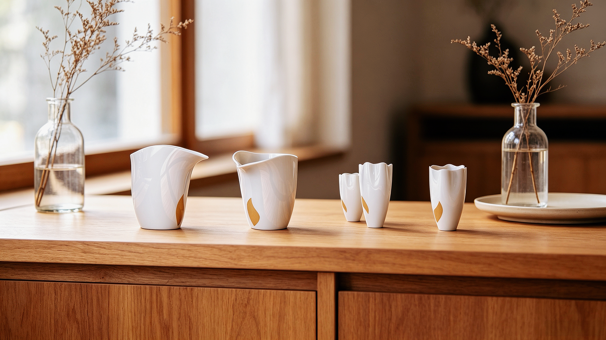

INDEPENDENT THINKING. CULTURAL EXPRESSION.DESIGN PORTFOLIO / 2018—2026
蕴万象 见视觉
01 / SELECTED PROJECTSVIEW ALL WORKS
我的创作始于对文化的好奇，也始于对日常的观察。
从传统纹样、工艺与东方观念中，寻找当代表达的可能。
以研究理解符号，以几何、材质与交互探索新的感知方式。
在视觉与器物之间，思考文化如何被看见、被使用、被延续。
让设计保有文化的深度，也与当下的生活产生细腻的共鸣。
SEE THE FAMILIARIN A NEW LIGHT.
◦ About
王 蕴 Yun Wang
设计师/视觉传达专任教师
Designer / Educator
◦ Research & Practice
以文化为起点，以设计相连接。
2018汉字转译
旋 · 字塑
旋 · 字塑
2020器物与日常
憩源茶具
憩源茶具
2023非遗文化
金箔莲花灯具
金箔莲花灯具
2024博物馆文创
四季盐礼
四季盐礼
2026文化可视化
四象数理图
四象数理图
◦ Education
南京艺术学院
2020—2023
艺术设计硕士 · 文化创意设计方向
2016—2020
艺术学士 · 文化与时尚设计方向
◦ Awards
2024 第六届江苏省高校设计作品展教师组 · 二等奖
2023 亚洲新生代设计展 · 金奖
2023 全国青年设计师大赛 · 二等奖
2022 米兰设计周中国高校设计优秀作品展江苏赛区 · 二等奖
◦ Focus
文化研究视觉转译器物设计交互体验

Yw.
Independent thinking.
Cultural expression.
PROFILE
YUN WANG / 王蕴
Designer & Educator
Culture and Form